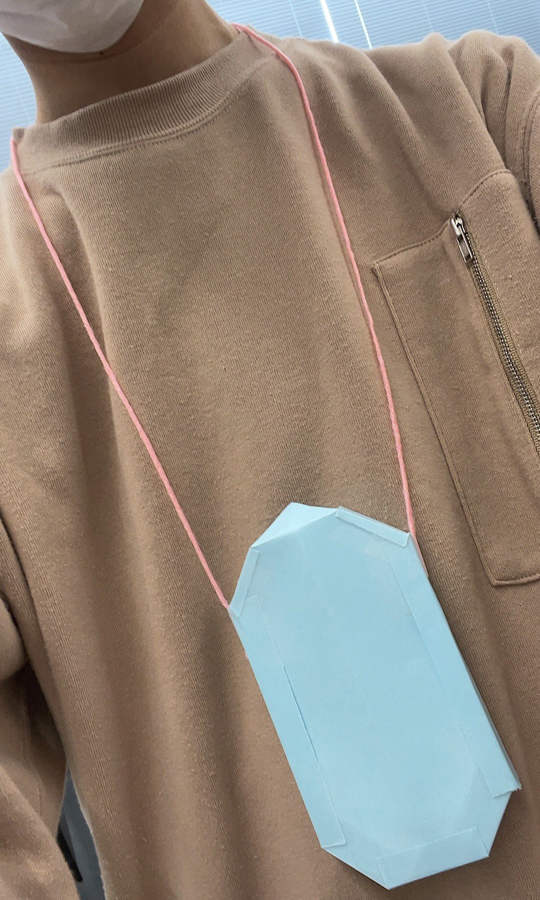
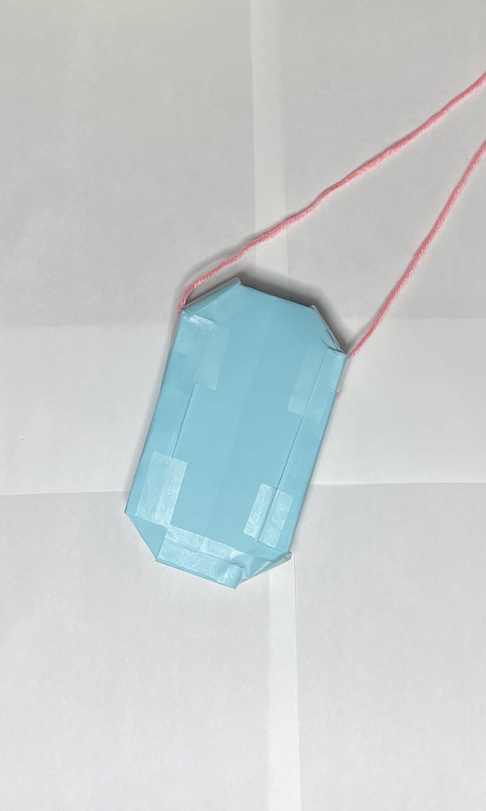
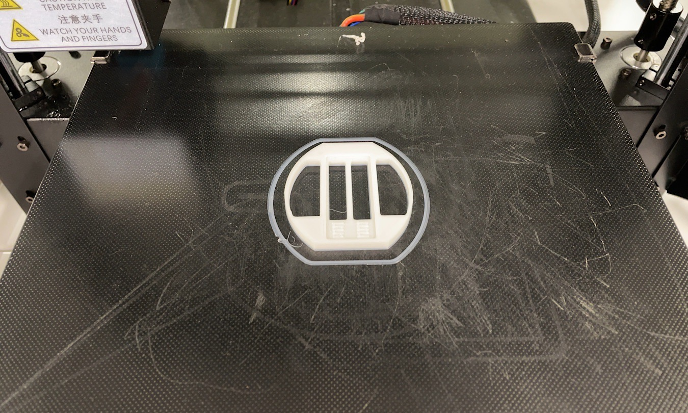
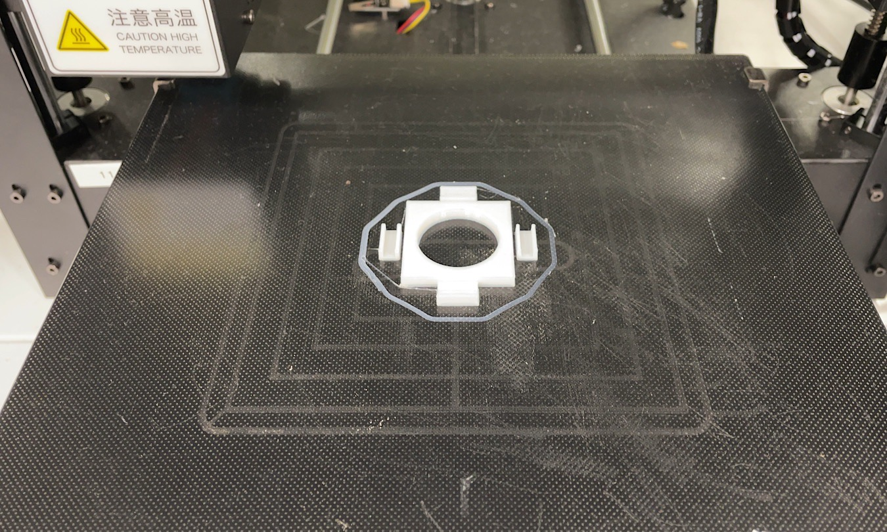
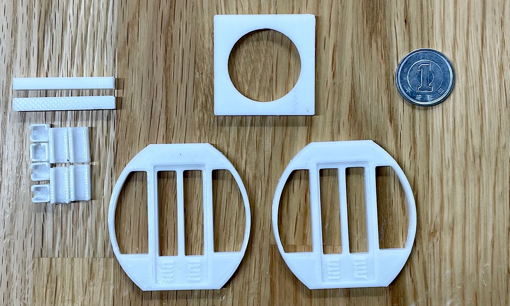

作品名：aaa
＜自分達が取り組むことにした問題＞
aaa
aaa
＜初めに作成した製品プロトタイプ＞
＜最終的に作成した製品プロトタイプ＞
＜製品の説明＞
aaaaaa
＜作成プロセス＞
最初にプロトタイプを作成。最初は薄型の首掛けカップホルダーを考えていた。
しかしながら、カップをそのまま入れられない欠点が見つかり、改善案を考えていった。
最初のプロトタイプの反省から、カップをそのまま入れられるように改善。
また、みなとみらいのコスモクロック21のゴンドラ型のデザインに変更し、かわいさを感じられるようにした。

次に、3Dプリンターを使って、小さいサイズのプロトタイプVer.2を作成した。

プロトタイプVer.2を組み立て、改善できるところはないか、グループのメンバーに聞いた。
＜使用機材＞
aaaaaa